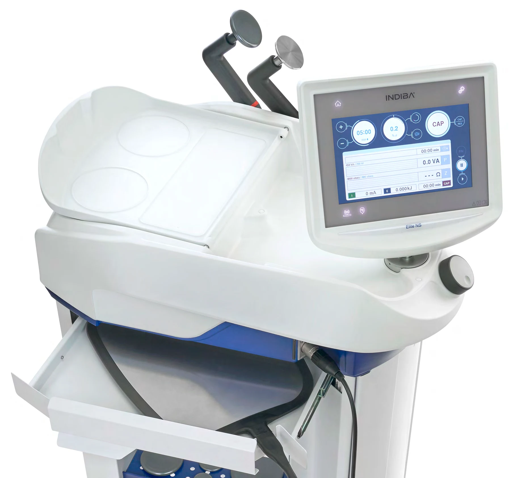

Skin quality & care
The catalogue describes facial aesthetic applications. Discuss your skin concerns, treatment goals and any recent procedures with your clinician before choosing a plan.
INDIBA at Soie Clinic · Cairo, Egypt
Discover INDIBA Deep Care at Soie Clinic: 448 kHz radiofrequency technology for a personalised approach to face and body care.

Available at Soie Clinic
Soie Clinic offers INDIBA Deep Care in Cairo, Egypt. Ask our team about branch availability and a consultation for your treatment goals.
According to the manufacturer’s catalogue, INDIBA uses its CRET system at 448 kHz. The catalogue describes effects on tissue circulation and cellular activity, with applications in aesthetic medicine and recovery care.
Your clinician will explain what is appropriate for you. The technology’s applications do not mean every treatment is suitable for every patient.
Discover the technology
The catalogue describes facial aesthetic applications. Discuss your skin concerns, treatment goals and any recent procedures with your clinician before choosing a plan.
The manufacturer also describes body applications. The treatment area, settings and session plan are selected after a personal assessment.
The catalogue describes use in tissue recovery and in reducing swelling and bruising. Use alongside other procedures requires your treating clinician’s guidance.
INDIBA في القاهرة
تمتلك عيادة سواي Soie Clinic جهاز INDIBA Deep Care، الذي يستخدم الترددات الراديوية بتردد 448 كيلوهرتز. يوضح كتالوج الشركة استخداماته التجميلية للوجه والجسم ودعم تعافي الأنسجة. يحدد الفريق الطبي مدى ملاءمة الجلسات حسب حالتك؛ النتائج وعدد الجلسات يختلفان من شخص لآخر.
للاستفسار عن الفرع المتاح والحجز، تواصل مع فريق العيادة قبل زيارتك.
Before your visit
Yes. INDIBA Deep Care is available at Soie Clinic in Cairo, Egypt. Contact our team to confirm the branch and appointment availability before visiting.
INDIBA Deep Care is a radiofrequency technology operating at 448 kHz using the manufacturer’s CRET system. The manufacturer describes applications in aesthetic medicine and tissue recovery.
The manufacturer’s catalogue describes face and body aesthetic applications and support for tissue recovery. Your clinician will assess your concern and decide whether a suitable protocol is available for you.
The number and timing of sessions depend on your assessment, treatment area and goals. Results vary; a consultation is needed before recommending a plan.
No. A clinician must review your medical history and contraindications, including pregnancy and implanted electronic devices such as pacemakers. Tell the team about any implants, medicines or recent procedures before treatment.
Ask our team about INDIBA at Soie Clinic and confirm the right branch before your visit.